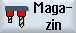

In der Magazinliste werden Werkzeuge mit ihren magazinbezogenen Daten angezeigt. Hier nehmen Sie gezielt Aktionen vor, die sich auf die Magazine und die Magazinplätze beziehen.
Einzelne Magazinplätze können für Werkzeuge platzcodiert, bzw. gesperrt werden.
Werkzeugparameter
Spaltenüberschrift | Bedeutung |
|---|
Platz
BS
 *falls in Magazinanwahl aktiviert | Magazin/Platznummer die Magazinplatznummern
Es wird zuerst die Magazinnummer und dann die Platznummer im Magazin angegeben.
Ist nur ein Magazin vorhanden, wird nur die Platznummer angezeigt. Beladestelle im Belademagazin
Bei anderen Magazintypen (z.B. bei einer Kette) können zusätzlich folgende Symbole angezeigt werden: |
Typ | Werkzeugtyp In Abhängigkeit vom Werkzeugtyp (dargestellt als Symbol) werden bestimmte Werkzeugkorrekturdaten freigegeben. |
Werkzeugname | Die Identifikation des Werkzeugs erfolgt über den Namen und die Schwesterwerkzeugnummer. Den Namen können Sie als Text oder Nummer eingeben. Hinweis: Die maximale Namenslänge von Werkzeugnamen beträgt 31 ASCII Zeichen. Bei asiatischen Zeichen oder Unicode Zeichen verringert sich die Zeichenanzahl. Folgende Sonderzeichen sind nicht zulässig: | # ". |
ST | Schwesterwerkzeugnummer (für Ersatzwerkzeugstrategie). |
D | Schneidennummer |
G | Sperren des Magazinplatzes. |
Mag.platztyp | Anzeige des Magazinplatztyps. |
Werkz.platztyp | Anzeige, welchen Werkzeugplatztyp das Werkzeug besitzt. |
Ü | Kennzeichnung eines Werkzeugs als übergroß. Das Werkzeug nimmt die Größe von zwei Halbplätzen links, zwei Halbplätzen rechts, ein Halbplatz oben und ein Halbplatz unten in einem Magazin ein. |
P | Festplatzcodierung. Das Werkzeug ist diesem Magazinplatz fest zugeordnet. |
Weitere Parameter
Wenn Sie eindeutige Schneidennummern eingerichtet haben, werden diese in der ersten Spalte angezeigt.
Spaltenüberschrift | Bedeutung |
|---|
D-Nr. | Eindeutige Schneidennummer |
SN | Schneidennummer |
Symbole der Magazinliste
Symbol / Kennzeichnung | | Bedeutung |
|---|
Werkzeugtyp |
Rotes Kreuz |  | Das Werkzeug ist gesperrt. |
Gelbes Dreieck - Spitze nach unten |  | Die Vorwarngrenze ist erreicht. |
Gelbes Dreieck - Spitze nach oben | | Das Werkzeug befindet sich in einem besonderen Zustand. Stellen Sie den Cursor auf das gekennzeichnete Werkzeug. Ein Tooltip gibt eine kurze Beschreibung. |
Grüner Rahmen
|  | Das Werkzeug ist vorausgewählt. |
Magazin/Platznummer |
Grüner Doppelpfeil | | Der Magazinplatz befindet sich auf der Wechselstelle. |
Grauer Doppelpfeil (Konfigurierbar) |  | Der Magazinplatz befindet sich auf der Beladestelle. |
Rotes Kreuz | | Der Magazinplatz ist gesperrt. |
Vorgehensweise
 | 1. | Wählen Sie den Bedienbereich "Parameter" an. |
|  | 2. | Drücken Sie den Softkey "Magazin". |